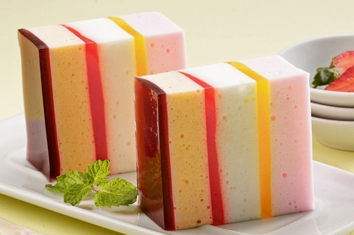

Resep puding Busa Warna Warni

Bahan-Bahan:
Bahan Puding Busa Merah Muda:
- 200 ml susu cair
- 1/2 bungkus agar-agar bubuk
- 30 gram gula pasir
- 2 buah putih telur
- 25 gram gula pasir
- 5 tetes pewarna merah muda
Bahan Puding Busa Putih:
- 200 ml susu cair
- 1/2 bungkus agar-agar bubuk
- 30 gram gula pasir
- 2 buah putih telur
- 25 gram gula pasir
Bahan Puding Busa Oranye:
- 200 ml susu cair
- 1/2 bungkus agar-agar bubuk
- 30 gram gula pasir
- 2 buah putih telur
- 25 gram gula pasir
- 5 tetes pewarna oranye
Bahan Puding 3 Warna:
- 400 ml air
- 1/2 bungkus agar-agar bubuk
- 60 gram gula pasir
- 3 tetes pewarna kuning
- 3 tetes pewarna merah cabai
- 3 tetes pewarna ungu
Langkah-Langkah:
- Langkah 1 :
- Puding busa merah, rebus susu cair, agar-agar, gula pasir, dan pewarna merah muda sambil diaduk sampai mendidih. Sisihkan.
- Langkah 2 :
- Kocok putih telur dan garam sampai setengah mengembang. Tambahkan gula pasir sedikit-sedikit sambil dikocok sampai mengembang. Tuang rebusan puding sedikit-sedikit sambil dikocok dengan kecepatan rendah. Tuang ke atas loyang diameter 20 cm dan tinggi 7 cm. Biarkan setengah beku.
- Langkah 3 :
- Puding warna, rebus air, agar-agar, dan gula pasir sambil diaduk sampai mendidih. Bagi adonan puding 3 bagian. Masing-masing tambahkan pewarna berbeda.
- Langkah 4 :
- Tuang puding kuning yang sudah dipanaskan di atas puding busa merah muda. Biarkan setengah beku.
- Langkah 5 :
- Buat puding busa putih seperti puding busa merah. Tuang di atas puding kuning. Biarkan setengah beku.
- Langkah 6 :
- Tuang puding merah yang sudah dipanaskan di atas puding busa putih. Biarkan setengah beku.
- Langkah 7 :
- Buat puding busa oranye seperti puding busa merah. Tuang di atas puding merah. Biarkan setengah beku.
- Langkah 8 :
- Tuang puding ungu yang sudah dipanaskan di atas puding busa oranye. Bekukan.